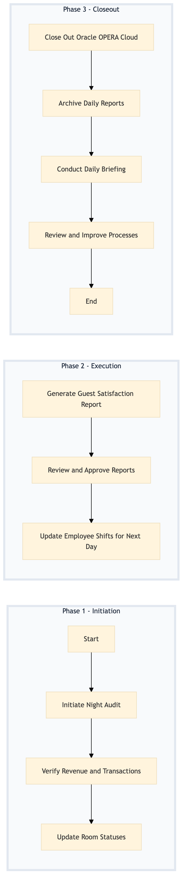

| Role | Steps |
|---|---|
| Front Desk Agent | 1.1 |
| Revenue Manager | 1.2 |
| Housekeeping Supervisor | 1.3 |
| Guest Services Manager | 2.1 |
| General Manager | 2.2 3.3 |
| Workday HCM Manager | 2.3 |
| IT Support Specialist | 3.1 3.2 |
| Step | Name | Role | System | Input | Output | KPI | Dec? | Exc? | Pain Point / Risk |
|---|---|---|---|---|---|---|---|---|---|
| 1.1 | Initiate Night Audit | Front Desk Agent | Oracle OPERA Cloud | None | Night Audit initiated in Oracle OPERA Cloud | less than 2 min | N | Y | System downtime or connectivity issues |
| 1.2 | Verify Revenue and Transactions | Revenue Manager | Oracle OPERA Cloud, IDeaS G3 RMS | Night Audit data from Oracle OPERA Cloud | Verified revenue report | less than 5 min | N | Y | Data discrepancies or missing transactions |
| 1.3 | Update Room Statuses | Housekeeping Supervisor | Oracle OPERA Cloud, SynXis CRS | Room status updates from housekeeping team | Updated room statuses in Oracle OPERA Cloud and SynXis CRS | less than 10 min | N | Y | Inaccurate or delayed room status updates |
| 2.1 | Generate Guest Satisfaction Report | Guest Services Manager | Marriott Bonvoy CRM, Knowcross HotSOS | Survey data from guests | Guest satisfaction report | less than 15 min | N | Y | Low response rates or incomplete surveys |
| 2.2 | Review and Approve Reports | General Manager | Oracle OPERA Cloud, Microsoft Power BI | Generated reports from various systems | Approved end-of-day reports | less than 20 min | Y | Y | Complex or conflicting data requiring manual adjustments |
| 2.3 | Update Employee Shifts for Next Day | Workday HCM Manager | Workday HCM, Oracle OPERA Cloud | Current shift schedules and employee availability | Updated shift schedules in Workday HCM | less than 10 min | N | Y | Employee scheduling conflicts or last-minute changes |
| 3.1 | Close Out Oracle OPERA Cloud | IT Support Specialist | Oracle OPERA Cloud | Approved end-of-day reports | Oracle OPERA Cloud closed for the day | less than 5 min | N | Y | System errors or data integrity issues |
| 3.2 | Archive Daily Reports | IT Support Specialist | Microsoft Power BI, SAP S/4HANA | Approved end-of-day reports and financial records | Archived daily reports in Microsoft Power BI and SAP S/4HANA | less than 10 min | N | Y | Insufficient storage or backup issues |
| 3.3 | Conduct Daily Briefing | General Manager | Book4Time, Microsoft Teams | Approved end-of-day reports and shift schedules | Daily briefing conducted with team | less than 30 min | N | Y | Poor attendance or lack of engagement |
| 3.4 | Review and Improve Processes | Operations Manager | Oracle OPERA Cloud, Salesforce | Daily briefing notes and feedback | Process improvement plan | less than 1 hour | Y | Y | Resource constraints or competing priorities |
The End-of-Day Reporting process at a Marriott full-service hotel involves closing out daily operations and generating reports to ensure accurate financial records and guest satisfaction metrics.